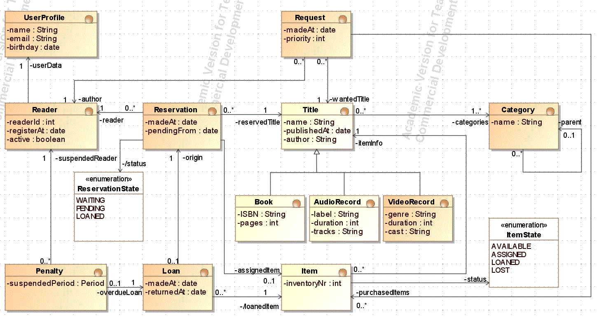

Package edu.gitt.is.magiclibrary.model
package edu.gitt.is.magiclibrary.model
Este paquete contiene los aspectos relacionados con el modelo de la aplicación MAGICLIBRARY y las clases para la persistencia
El modelo corresponde al recogido en el proyecto ejemplo de Magic Draw, conforme al siguiente diagrama de clases
- Version:
- 0.0
- Author:
- Isabel Román, para Ingeniería del software
-
ClassDescriptionDao<T>Esta interfaz declara un modo genérico de manejo de la persistencia de entidades del tipo TEsta es la clase para manejar las entidades de tipo Book (libro)
Booky está codificada usando la API JPAjavax.persistenceEsta es la clase incluye funcionalidades comunes a los DAO que utilizan la API JPAjavax.persistenceEsta es la clase para manejar las entidades de tipo Item (ejemplar)Itemy está codificada usando la API JPAjavax.persistence